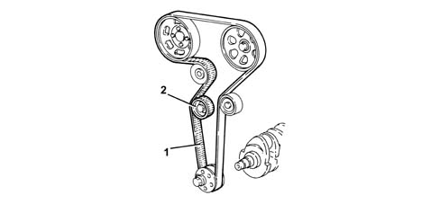
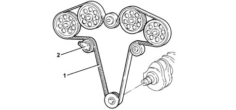
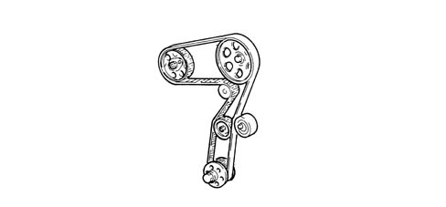

1032B BELT TIMING SYSTEM
- Path
- Descriptions > 10 ENGINE UNIT > 1032 TIMING SYSTEM > 1032B BELT TIMING SYSTEM
- Kind
- system description
- Applies to
- engines: 2.0 JTS, 3.2 V6, 1.9 JTD 16V; all production periods
- Interactive page
- https://sloeber94.github.io/elrnDB-aGt/en/#/125000264
Applies to: engines: 2.0 JTS; all production periods
CONSTRUCTION FEATURES
It is directly operated, via the toothed belt (1), tensioned by an automatic tensioner (2) which means that no maintenance operations for checking the tension need be carried out.

Applies to: engines: 3.2 V6; all production periods
OPERATION
It is directly operated, via the toothed belt (1), tensioned by an 'Litens' automatic tensioner (2) which means that no maintenance operations for checking the tension need be carried out.

Applies to: engines: 1.9 JTD 16V; all production periods
CONSTRUCTION FEATURES
Controlled directly via the toothed belt which also controls the camshaft in addition to the pressure pump and the water pump.
